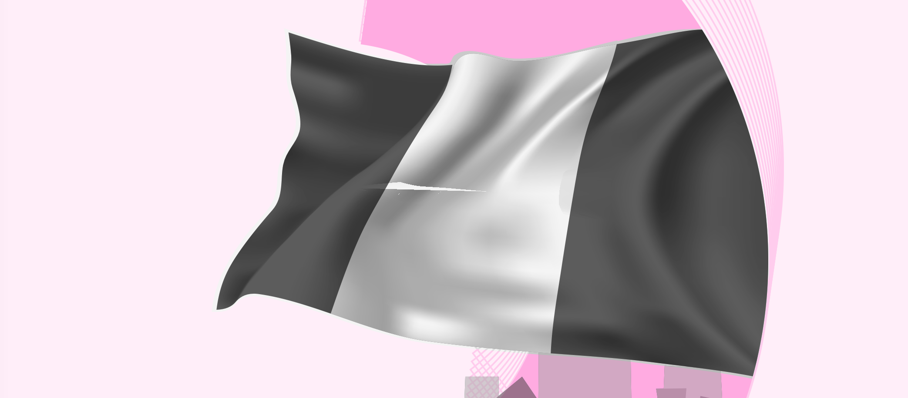
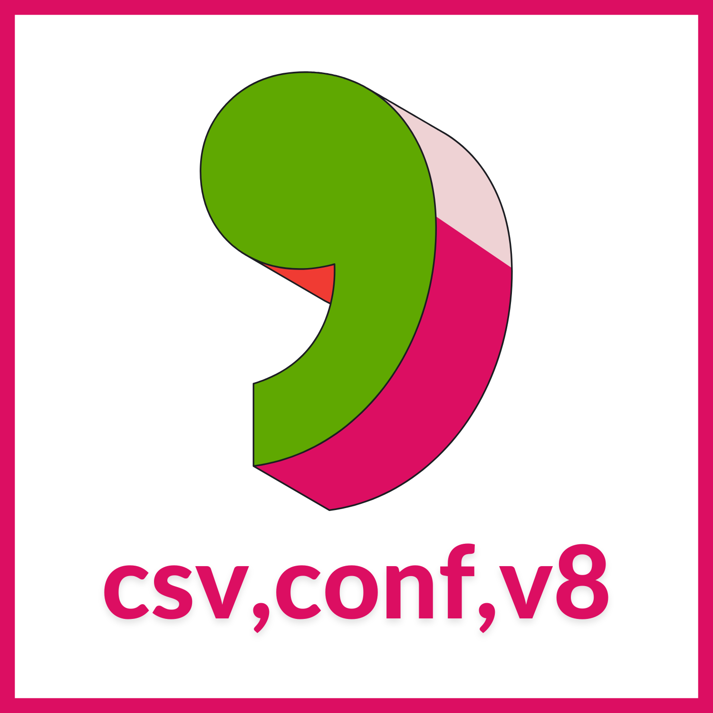

Active
Project Image
Macular
A data and creative project addressing the missingness of African datasets — inspired by photographing the world through the lens of visual disability.
macular.io →I produce research-backed and visually driven narratives that help institutions gain clarity and confidence with their data. My work combines the rigour of research and the aesthetic allure of design to draw attention to important subjects.

Design
DesignA data and creative project addressing the missingness of African datasets — inspired by photographing the world through the lens of visual disability.
macular.io →American Business School of Paris · Statistical computing, predictive analytics, and reproducible research workflows using R and the tidyverse.
American Business School of Paris · AI applications in business, prompt engineering, and responsible use of AI in organisational decision-making.